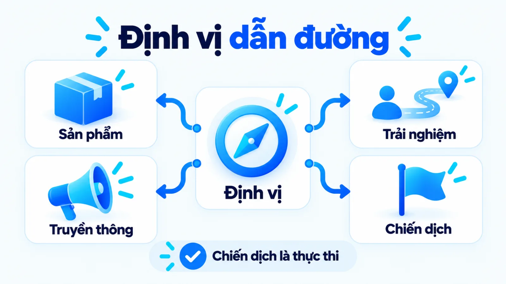
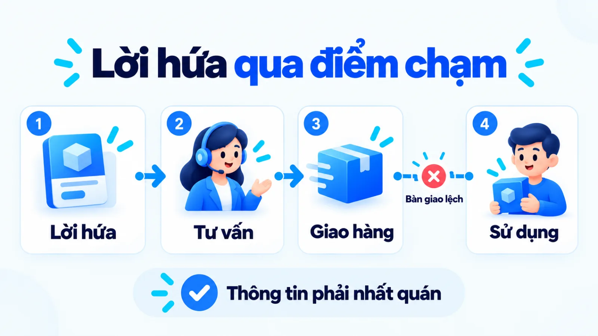
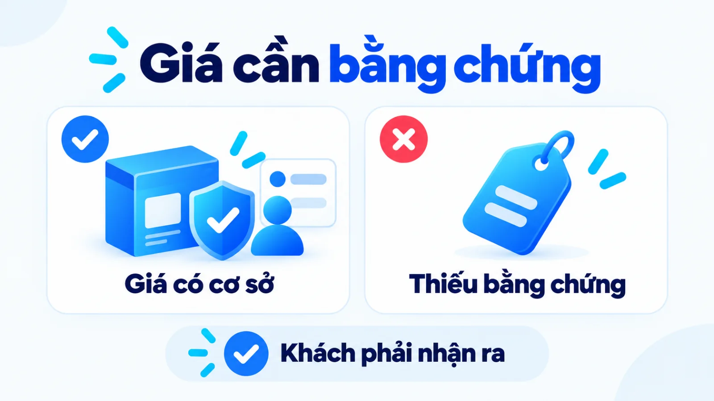
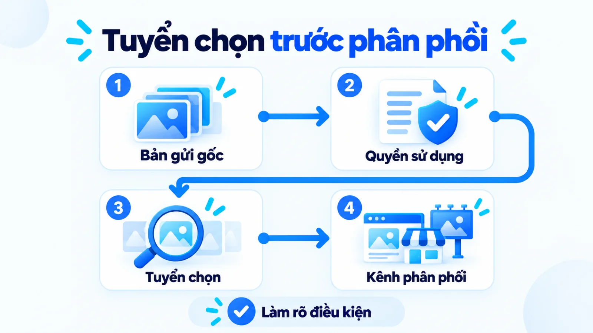
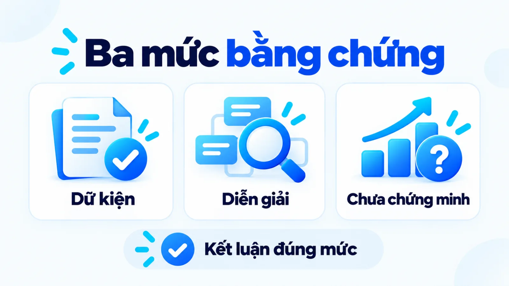

Các chiến lược marketing của Apple, SME học được gì?
Các chiến lược marketing của Apple là trường hợp cho thấy định vị cần được hỗ trợ bằng sản phẩm, trải nghiệm và truyền thông nhất quán. Tôi là Lê Tuấn Việt, Marketing Leader tại TAKI Group. Từ hồ sơ doanh nghiệp và chiến dịch công khai, bài viết tách bằng chứng khỏi diễn giải, rồi đưa bảng chọn nguyên lý cùng khung đo lường cho doanh nghiệp vừa và nhỏ (SME).
- Đăng ngày
- Cập nhật

Tóm tắt nhanh
- Các chiến lược marketing của Apple cần được đọc như một hệ lựa chọn phối hợp. Một mẫu quảng cáo riêng lẻ chưa giải thích được cả hệ.
- Định vị cao cấp cần bằng chứng về giá trị và trải nghiệm phục vụ tương ứng. Tăng giá đơn thuần chưa tạo ra lý do để khách chấp nhận.
- Shot on iPhone cho thấy cách dùng kết quả sản phẩm làm chất liệu truyền thông; phạm vi triển khai chưa chứng minh doanh thu tăng thêm.
- Doanh nghiệp nhỏ nên thử nguyên lý tại điểm chạm kiểm soát được, rồi đối chiếu tương tác với hành vi đạt chuẩn và kết quả kinh doanh.
Mục lục bài viết9 phần
Các chiến lược marketing của Apple là gì?
Các chiến lược marketing của Apple là hệ lựa chọn phối hợp giữa định vị, sản phẩm, giá, phân phối và truyền thông. Giá trị phân tích nằm ở quan hệ giữa các lựa chọn, cùng điều kiện khiến chúng hỗ trợ lẫn nhau.
Hồ sơ công khai, phạm vi hoạt động toàn cầu
Theo Form 10-K năm tài chính 2025 nộp SEC, cơ quan quản lý chứng khoán Mỹ, Apple phát triển gần như toàn bộ giải pháp sản phẩm, gồm phần cứng, hệ điều hành và ứng dụng. Hãng liệt kê giá, thiết kế, hệ sinh thái, marketing và phân phối trong các yếu tố cạnh tranh.
Chiến lược, chiến thuật và chiến dịch khác nhau thế nào?
Hiệp hội Marketing Mỹ (AMA) mô tả chiến lược như định hướng phối hợp nỗ lực và nguồn lực. Để đọc case nhất quán, bài dùng cách phân biệt theo cấp độ quyết định.
- Chiến lược: chọn khách hàng, giá trị muốn cung cấp và cách phân bổ nguồn lực.
- Chiến thuật: chọn cách thực hiện định hướng tại một điểm chạm cụ thể.
- Chiến dịch: tổ chức hoạt động quanh mục tiêu, đối tượng và thời hạn xác định.
Một sự kiện ra mắt có thể phục vụ chiến lược, nhưng chưa đại diện cho toàn bộ chiến lược. Tương tự, góc tiếp cận nội dung giúp chọn cách kể một bài, còn định vị quyết định giá trị thương hiệu muốn người mua ghi nhớ.

Marketing Mix 4P của Apple phối hợp ra sao?
Marketing Mix 4P là nhóm quyết định về sản phẩm, giá, phân phối và xúc tiến. Với Apple, có thể đọc các nhóm này theo mức nhất quán giữa giá trị được hứa và trải nghiệm khách nhận được.
Sản phẩm và trải nghiệm sử dụng
Quyền phát triển phần cứng cùng phần mềm trong hồ sơ toàn cầu năm 2025 tạo điều kiện phối hợp trải nghiệm. Diễn giải marketing là sự tích hợp có thể giảm những chỗ khách phải tự xử lý khi chuyển tác vụ; nguồn không đo riêng mức hài lòng do tích hợp.
Với SME (doanh nghiệp vừa và nhỏ), bài học là nối tư vấn với thực tế bàn giao. Lời hứa bán hàng cần khớp năng lực triển khai.

Định giá theo giá trị cảm nhận
Giá trị cảm nhận là đánh giá của khách về lợi ích so với những gì phải bỏ ra. Khi phân tích chiến lược marketing của Apple, cần đặt giá cạnh thiết kế, công năng, dịch vụ và lựa chọn thay thế; hồ sơ công khai chưa chứng minh giá cao tự tạo cầu.
Tôi chỉ xem mức giá cao là có căn cứ khi khách mục tiêu nhận ra khác biệt, coi khác biệt ấy đáng tiền và thực sự nhận được nó. Nếu doanh nghiệp phải liên tục giải thích vì sao mình đắt mà chưa đưa được bằng chứng, nên kiểm tra lại gói giá trị.
Phân phối và khả năng kiểm soát điểm chạm
Trong năm tài chính kết thúc ngày 27/09/2025, doanh thu thuần toàn cầu qua kênh trực tiếp và gián tiếp của Apple lần lượt chiếm 40% và 60%, theo Form 10-K. Tỷ trọng này cho thấy hãng phối hợp nhiều loại kênh; nó chưa đo chất lượng trải nghiệm tại từng điểm bán.
Tài liệu mua sắm của Apple tại Mỹ mô tả website, ứng dụng, cửa hàng và đại lý. Nguyên lý SME có thể học là chuẩn hóa thông tin cùng cách bàn giao khách giữa những kênh đủ sức kiểm soát.
Xúc tiến và bằng chứng lợi ích
Xúc tiến giúp khách nhận ra lợi ích qua thông điệp và bằng chứng. Trong One Night on iPhone 7 năm 2017, tác phẩm chụp đêm thể hiện khả năng camera. Truyền thông khó bù cho trải nghiệm yếu vì khách vẫn đối chiếu lời hứa với thực tế sử dụng.

Định vị và hệ sinh thái tạo khác biệt thế nào?
Định vị tạo hệ quy chiếu để khách hiểu thương hiệu; hệ sinh thái có thể củng cố hệ quy chiếu đó bằng trải nghiệm liên thông. Tác động tới từng phân khúc vẫn cần dữ liệu khách hàng.
Tính nhất quán giữa lời nói và trải nghiệm
Trong thông báo thương hiệu năm 2026, Apple tiếp tục đề cao tinh thần thinking different và sự kết hợp công nghệ với yếu tố con người. Đây là tuyên bố tự định vị, chưa xác nhận người mua hiểu thương hiệu tương ứng.
- Giá trị dễ nhận biết: thông điệp làm rõ vấn đề doanh nghiệp muốn giải quyết.
- Trải nghiệm tiếp nối: thông tin và hỗ trợ không bị đứt khi khách chuyển điểm chạm.
- Bằng chứng phù hợp: kết quả sử dụng làm rõ lời hứa, thay vì chỉ lặp lại lời quảng cáo.
Hồ sơ Apple năm 2025 mô tả dịch vụ đám mây giữ nội dung cập nhật trên nhiều thiết bị. Tài liệu mua sắm tại Mỹ cũng cho biết khách có thể truy cập danh sách đã lưu khi mua trực tuyến hoặc tại cửa hàng. Cả hai là bằng chứng về chức năng, chưa phải phép đo giữ khách.
Ví dụ biên tập, không phải kết quả khách hàng thật: khách xem mẫu nội thất trên website rồi đến xưởng và được tiếp tục tư vấn từ mẫu đã chọn. Sự tiếp nối làm cơ chế thuận tiện dễ hình dung, không chứng minh động cơ của người mua Apple.
SME có thể bắt đầu từ bàn giao thông tin và giọng thương hiệu nhất quán. Khi nền phục vụ chưa ổn định, mở thêm sản phẩm có thể làm lời hứa khó thực hiện đồng đều.
Think Different và Shot on iPhone chứng minh điều gì?
Các chiến dịch cho thấy những cách làm rõ bản sắc hoặc biến khả năng sản phẩm thành nội dung. Hồ sơ đang có xác nhận hoạt động triển khai, chưa xác nhận doanh thu tăng thêm do từng chiến dịch.
Think Different và hệ giá trị thương hiệu
Thông cáo Apple năm 2002 nhắc lại Think Different; thông điệp năm 2026 coi tinh thần khác biệt là giá trị trung tâm. Nguồn xác nhận cách hãng tự định vị, chưa cung cấp mục tiêu gốc của chiến dịch.
Củng cố bản sắc là mục tiêu diễn giải của bài: thông điệp khác biệt có thể giúp nhóm khách coi trọng sáng tạo tìm thấy ý nghĩa ngoài thông số. Các thông cáo là bằng chứng về cách giới thiệu thương hiệu, chưa đo nhận thức hay doanh số do chiến dịch.
Shot on iPhone và bằng chứng sản phẩm
Trong One Night on iPhone 7 năm 2017, Apple cho biết nhiếp ảnh gia dùng khả năng chụp thiếu sáng để ghi lại cảnh đêm. Thông cáo công bố kế hoạch trưng bày tác phẩm tại 25 quốc gia, thuộc nhánh chiến dịch này trên phạm vi quốc tế.
Ở cấp độ triển khai, mục tiêu là làm khả năng chụp thiếu sáng trở nên quan sát được qua tác phẩm. Diễn giải marketing là giúp khách hình dung lợi ích; ảnh tuyển chọn chưa đại diện cho mọi người dùng hoặc chứng minh doanh thu tăng thêm.
Shot on iPhone Challenge năm 2019 tiếp tục mời người dùng toàn cầu gửi ảnh, với kế hoạch đưa ảnh thắng cuộc lên kênh trực tuyến, cửa hàng và biển quảng cáo. Quy trình tuyển chọn cùng điều kiện sử dụng nội dung là một phần triển khai.

SME chỉ nên học cơ chế này khi lợi ích có thể ghi lại và công bố phù hợp. Ngân sách phân phối cùng cộng đồng sẵn có cũng có thể góp phần vào độ phủ của Apple, nên không thể lấy hình thức chiến dịch làm lời hứa hiệu quả.
Bằng chứng nào đủ để kết luận về hiệu quả?
Nguồn về hoạt động đủ để xác nhận thương hiệu đã làm gì; kết luận về hiệu quả cần dữ liệu kết quả và cách đối chiếu. Bảng sau tách những mức chứng minh khác nhau.
| Dữ kiện xác nhận | Diễn giải cơ chế | Giới hạn và khả năng khác |
|---|---|---|
| Apple phát triển giải pháp tích hợp | Có thể giảm gián đoạn | Chưa tách tác động giữ khách khỏi chất lượng và nhu cầu |
| Có cả kênh trực tiếp và gián tiếp | Phủ rộng, giữ kiểm soát | Tỷ trọng doanh thu chưa đo trải nghiệm từng kênh |
| Ảnh được tuyển chọn và phân phối | Minh chứng công năng | Độ phủ còn phụ thuộc ngân sách và sức hút thương hiệu |
| Tinh thần khác biệt được nhắc lại | Có thể củng cố định vị | Tuyên bố thương hiệu chưa đo nhận thức người mua |
Các chiến lược marketing của Apple vì vậy nên được dùng để hình thành giả thuyết. Khi thiếu nhóm đối chiếu hoặc dữ liệu kết nối tới bán hàng, chưa đủ dữ liệu để kết luận lựa chọn nào tạo ra mức đóng góp riêng biệt.
Nếu dùng AI tổng hợp case, cần đối chiếu từng khẳng định với nguồn gốc. Bài về kiểm chứng nội dung AI giải thích vì sao một diễn giải trôi chảy vẫn có thể sai dữ kiện.

SME chọn gì từ các chiến lược marketing của Apple?
SME nên chọn nguyên lý khớp với sản phẩm, dữ liệu và năng lực phục vụ hiện có. Bảng dưới giúp đặt bài học cạnh điều kiện phù hợp, ngoại lệ và công sức thực hiện.
| Nguyên lý | Phù hợp khi và ngoại lệ | Thử nhỏ và đánh đổi |
|---|---|---|
| Nhất quán định vị | Phân khúc rõ; cần sửa nếu nhu cầu thực tế đổi | Tập trung thông điệp vào lợi ích; phải bỏ ý ngoài trọng tâm |
| Sản phẩm làm bằng chứng | Kết quả quan sát được; khó dùng với dữ liệu nhạy cảm | Thử nội dung minh họa đã kiểm tra; tốn công xác minh |
| Liên thông điểm chạm | Đủ năng lực tư vấn và hỗ trợ; mở rộng sớm dễ quá tải | Chuẩn hóa bàn giao khách; chấp nhận mở kênh chậm hơn |
| Nội dung từ khách hàng | Có đồng ý và kiểm chứng; tuyển chọn có thể gây lệch | Thử bộ nội dung phù hợp phân khúc; cần nguồn lực duyệt |
Điều kiện sẵn sàng cho một thử nghiệm
Trước khi chọn cách làm, kiểm tra những câu hỏi sau. Nếu chưa trả lời được, nên bổ sung nền tương ứng trước khi tăng phạm vi triển khai.
- Khách mục tiêu có nhận ra lợi ích đang được nhấn mạnh?
- Sản phẩm có bằng chứng kiểm tra được cho lợi ích đó?
- Đội ngũ có thực hiện đúng lời hứa sau khi khách mua?
- Nội dung minh họa có nguồn gốc và thỏa thuận sử dụng rõ ràng?
- Có dữ liệu nền cùng tiêu chí tiếp tục, sửa hoặc dừng thử?
Ví dụ biên tập, không phải kết quả khách hàng thật: một xưởng nội thất thử trang công trình hoàn thiện cho nhóm khách phù hợp. Xưởng dùng dữ liệu khách hàng tự khai báo để hỏi nhu cầu, rồi kiểm tra chất lượng yêu cầu tư vấn.
Đo thử nghiệm theo kết quả kinh doanh thế nào?
Nên nối tương tác với hành vi đạt chuẩn và kết quả bán hàng đã xác nhận, thống nhất đối tượng, kỳ đo và cách ghi nhận.
Hiệp hội Đo lường và Đánh giá Truyền thông Quốc tế (AMEC) phân biệt phản ứng ban đầu, thay đổi dài hạn ở công chúng và đóng góp vào mục tiêu tổ chức. Khung dưới vận dụng nguyên tắc này cho SME, không thay thế phân loại của AMEC.
Với tỷ lệ tương tác, mẫu số là số người duy nhất thuộc nhóm khách mục tiêu đã tiếp cận nội dung trong kỳ. Tử số chỉ tính người trong mẫu số đã xem hết video hoặc mở đủ các phần bằng chứng định trước. Chốt dấu hiệu ghi nhận trước khi chạy; mỗi người được đếm một lần từ ngày bắt đầu đến ngày kết thúc kỳ đo.
| Tầng đo | Cách tính và dữ liệu | Giới hạn khi đọc |
|---|---|---|
| Tương tác | Người xem đủ bằng chứng chia người mục tiêu đã tiếp cận; dữ liệu website hoặc kênh | Chưa đo hiểu biết hay ý định |
| Hành vi đạt chuẩn | Yêu cầu phù hợp chia tổng yêu cầu; biểu mẫu và hồ sơ tư vấn | Cần tiêu chí phù hợp thống nhất |
| Kết quả kinh doanh | Đơn xác nhận chia yêu cầu đạt chuẩn; hệ thống bán hàng và tài chính | Còn chịu ảnh hưởng của giá, tồn kho và năng lực bán |
Khách hàng tiềm năng đạt chuẩn là người đáp ứng tiêu chí phù hợp đã định trước. Những hành vi nhỏ trên đường mua được giải thích trong bài chuyển đổi vi mô; chúng giúp tìm điểm cần sửa, chưa thay thế kết quả bán hàng.
Chốt kỳ đo theo chu kỳ mua, giữ tử số và mẫu số cùng đơn vị. Dùng nhóm đối chiếu khi khả thi; nếu so với dữ liệu nền, ghi thay đổi về giá, nguồn khách và vận hành. Chia sẻ riêng tư khó gắn nguồn, thường gọi là dark social, có thể làm thiếu dấu vết nguồn khách.
Tôi không khuyến nghị mở rộng thử nghiệm chỉ vì tương tác tăng. Nếu yêu cầu phù hợp và kết quả bán hàng chưa cải thiện sau kỳ đánh giá, cần kiểm tra giả thuyết cùng cách đo trước khi chi thêm nguồn lực. Với kênh trả phí, SME nên lập kế hoạch chạy quảng cáo Facebook để chốt ngưỡng điều chỉnh ngân sách.
Câu hỏi thường gặp về các chiến lược marketing của Apple
Apple có thật sự không giảm giá hay không?
Không đủ căn cứ trong hồ sơ này để khẳng định Apple không giảm giá. Khi kiểm tra ưu đãi, cần tách giá niêm yết, thị trường, thời điểm và bên bán; tránh lấy một kênh đại diện cho toàn hãng.
Doanh nghiệp bán hàng thiết yếu có nên học định vị cao cấp của Apple?
Chỉ nên cân nhắc khi khách mục tiêu coi khác biệt được chứng minh là đáng trả thêm. Nếu quyết định mua chủ yếu dựa vào tính sẵn có và tổng chi phí, ưu tiên khả năng cung ứng cùng giá trị sử dụng rõ ràng.
Hệ sinh thái cho doanh nghiệp nhỏ có cần nhiều sản phẩm không?
Không cần mở nhiều sản phẩm để cải thiện sự liên thông trong hành trình. Có thể bắt đầu bằng việc nối tư vấn, đặt mua, hướng dẫn sử dụng và hỗ trợ, rồi kiểm tra khách còn gặp vướng mắc ở đâu.
Nội dung khách hàng gửi đến có thể dùng ngay cho quảng cáo không?
Không nên mặc định nội dung được gửi đến đã có đủ thỏa thuận cho mọi mục đích quảng cáo. Cần làm rõ phạm vi sử dụng, thời hạn, cách ghi công và việc xử lý yêu cầu liên quan trước khi triển khai.
Thử nghiệm trong bao lâu mới đủ kết luận?
Thời hạn cần bao phủ chu kỳ quyết định mua và thời gian xác nhận kết quả của doanh nghiệp. Chốt lịch đánh giá trước khi chạy; nếu kết quả bán hàng chưa kịp xuất hiện, chỉ báo cáo tín hiệu sớm cùng giới hạn đang có.
Có thể lấy kết quả của Apple làm chỉ tiêu cho doanh nghiệp nhỏ không?
Không nên dùng kết quả của Apple làm ngưỡng mục tiêu chung. Doanh nghiệp cần so với dữ liệu nền của mình và điều kiện thử tương đương, vì quy mô thương hiệu, sản phẩm cùng năng lực phân phối khác nhau.
Kết luận
Các chiến lược marketing của Apple gợi ra nguyên lý phối hợp lời hứa, trải nghiệm và bằng chứng. SME nên chọn điểm chạm có thể kiểm soát, thử với điều kiện rõ và chỉ mở rộng khi dữ liệu phía sau ủng hộ giả thuyết. Khi đọc các bài trong chuyên mục Case Marketing, hãy giữ câu hỏi: bằng chứng này xác nhận hoạt động hay xác nhận kết quả?